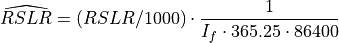
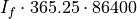

Preprocessor¶
The high-level API is principally defined in pyDeltaRCM.preprocessor.
Todo
add paragraph description of the module. What can we do with this? Why does it exist? Link to the relevant documentation in the user guide and examples.
Preprocessor classes and API¶
The following classes are defined in the pyDeltaRCM.preprocessor module and enable the high-level model API to work at both the command line and as a Python object.
Command line preprocessor. |
|
|
Python high level api. |
Base preprocessor class. |
Preprocessor function and utilities¶
Todo
add description, what are these?
-
pyDeltaRCM.preprocessor.preprocessor_wrapper()¶ Wrapper for command line interface.
The entry_points setup of a command line interface requires a function, so we use this simple wrapper to instantiate and run the jobs.
This function creates an instance of the
PreprocessorCLIand calls therun_jobs()to execute all jobs configured in the preprocessor. In code:pp = PreprocessorCLI() pp.run_jobs()
-
pyDeltaRCM.preprocessor.scale_relative_sea_level_rise_rate(mmyr, If=1)¶ Scale a relative sea level rise rate to model time.
This function scales any relative sea level rise rate (RSLR) (e.g., sea level rise, subsidence) to a rate appropriate for the model time. This is helpful, because most discussion of RSLR uses units of mm/yr, but the model (and model configuration) require units of m/s. Additionally, the model framework needs to assume an “intermittency factor” to convert from real-world time to model time.
Relative sea level rise (subsidence and/or sea level rise) are scaled from real world dimensions of mm/yr to model input as:

This conversion makes it such that when one real-world year has elapsed ( seconds in model time), the relative sea level has changed by the number of millimeters specified in the input
mmyr.Note
Users should use this function to determine the value to specify in an input YAML configuration file; no scaling is performed internally.
- Parameters
mmyr (
float) – Millimeters per year, relative sea level rise rate.If (
float, optional) – Intermittency factor, fraction of time represented by morphodynamic activity. Should be in interval (0, 1). Defaults to 1 if not provided, i.e., no scaling is performed.
- Returns
scaled – Scaled relative sea level rise rate, in meters per second.
- Return type
float
-
pyDeltaRCM.preprocessor._write_yaml_config_to_file(_config, _path)¶ Write a config to file in output folder.
Write the entire yaml configuation for the configured job out to a file in the job output foler.
Note
This function is utilized by the BMI implementation of pyDeltaRCM as well. Please do not move.